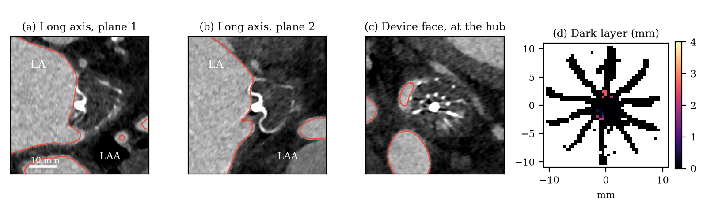
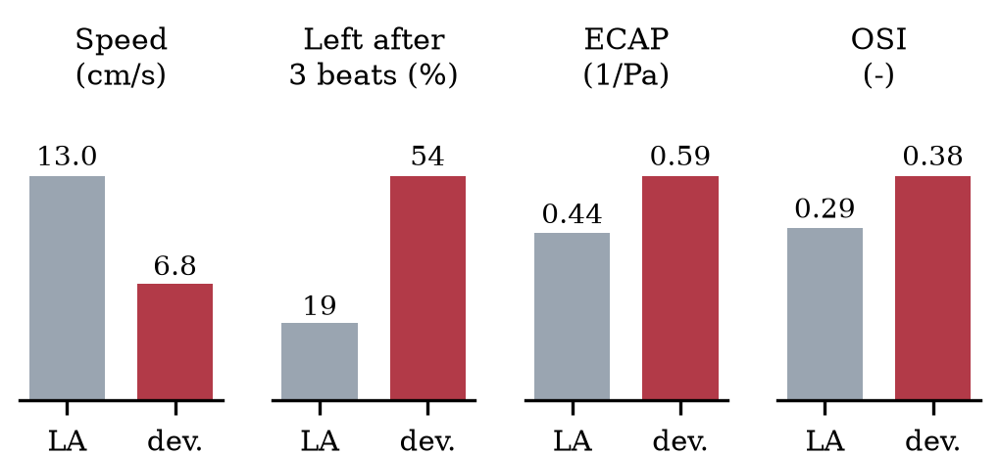

1. Introduction
In atrial fibrillation the upper chambers of the heart quiver instead of contracting, so blood moves slowly in the left atrium (LA). Most of the clots that cause strokes in these patients form in the left atrial appendage (LAA), a small pouch of the LA. When blood thinners cannot be used, the LAA can be closed with an occluder (here, a WATCHMAN-type device). In a few percent of patients, a clot then grows on the side of the device that faces the atrium. This is called device-related thrombus (DRT), and it raises the risk of stroke1,2.
The question of this report is simple: does Case 1 have a DRT? Medical images are the evidence for this. We also simulated the blood flow, because flow explains why a clot may or may not form: clots like slow, stagnant blood3,4.

2. Methods
2.1 Images and segmentation
We used the contrast cardiac CT of Case 1, a 3D image with points about half a millimetre apart. In this CT, blood with contrast looks bright (about 490 HU, the CT brightness scale) and the metal of the device looks very bright (above 700 HU). A clot does not take up contrast, so on CT a DRT shows up as a darker layer covering the device, called hypo-attenuated thickening (HAT)5. In 3D Slicer we traced the LA, the four pulmonary veins (PVs) and the mitral annulus (192.6 mL in total), and, separately, the metal of the device (bonus file).
To check for this dark layer with numbers rather than by eye, we drew 516 short lines across the device face, one every 0.5 mm, and measured on each one how much dark tissue (below 250 HU) sits between the bright blood and the metal.
2.2 3D model and mesh
We cleaned the LA surface in Meshmixer and cut it where the four PVs and the mitral valve (MV, the opening towards the ventricle, 597 mm²) end. We rotated it so that the MV faces down the Z axis, because the heart motion we apply acts along Z. Below the MV we added a short round tube (5 mm to become round, then 10 mm straight), so that the valve can slide up and down like a piston (see 2.3). Finally, Gmsh filled the inside with 245,471 small tetrahedra (the limit is 500,000; even the worst one is acceptable, skewness 0.91).
2.3 Blood-flow simulation
Ansys Fluent calculated how the blood moves, one step every 0.01 s, for two heartbeats of 0.875 s each (blood with density 1060 kg/m³ and viscosity 3.5 mPa·s, smooth laminar flow). The inputs were the course profiles: the pressure at the PVs (5–8.5 mmHg), the speed of the blood leaving through the MV (a single filling wave, as in AF, up to 0.94 m/s) and the up-and-down movement of the MV (8.9 mm). The mesh moves with the valve and is rebuilt locally when its cells become too deformed. Our first two attempts, in which the whole atrial wall could deform, stopped with an error when the valve moved back up: the cells next to the valve were squeezed so much that they turned inside out. With the tube and a fixed atrial wall, the simulation ran to the end without errors. We only analysed the second beat, because the first one still carries effects of the start.
2.4 What we measured
Speed and washout. We measured the average blood speed in the whole LA and within 10 mm of the device. For washout, we placed virtual particles all over the LA (one every 3 mm), let the flow carry them, and counted how many were still inside after each beat. Wall indices. TAWSS is the average rubbing force of the blood on the wall during a beat (in Pa); it is low where blood is slow. OSI (from 0 to 0.5) is high where the flow keeps changing direction. ECAP = OSI / TAWSS puts both together: it is high where blood is slow and goes back and forth. Values above about 1.4 Pa−1 have been linked to clot formation6,7.
3. Results
3.1 The CT shows no clot on the device
On 95 % of the lines there is no dark layer at all: the bright blood touches the device directly. Only one line in five hundred (0.2 %) shows 3 mm or more, at single points on the edge of the frame, where the metal blurs the image. A real DRT would look like a continuous dark cap over the centre of the device. The appendage behind the device is completely dark, which means that no blood gets in: the device closes it fully (Figure 2).

3.2 The simulated flow is realistic
The two beats are almost the same (the strongest outflow through the MV is 500 and 514 mL/s), and each beat pushes out 82 mL, a normal value. The blood entering through the PVs matches the blood leaving through the MV, once the small change in atrial volume (190.7–196.1 mL) is taken into account. When the ventricle fills, a strong stream crosses the atrium towards the valve. Between filling waves, the blood in the body of the atrium turns slowly in a large swirl, or vortex (Figure 3).

3.3 The device sits in a slow region
Next to the device, blood moves at about half the average speed of the atrium (6.8 vs 13.0 cm/s), and it is replaced much more slowly: after three beats, 54 % of the blood that started next to the device is still there, compared with 19 % for the atrium as a whole (Figures 4 and 5). On the wall around the device, the flow also changes direction more often (OSI 0.38 vs 0.29) and ECAP is higher (0.59 vs 0.44 Pa−1). Still, ECAP stays below 1.4 Pa−1 everywhere on the wall.


4. Discussion and conclusion
Answer: there is no device-related thrombus in Case 1. The CT is what decides this: the bright, contrast-filled blood touches the device everywhere and no dark layer covers it. The simulation does not change the answer, but it helps to understand the risk. The device sits in the quietest corner of the atrium, where blood moves more slowly, stays longer and pushes on the wall in changing directions. These are the conditions that favour clots1,3,7, but here they are only moderate, and no point of the wall reaches the ECAP threshold. In simple terms: there is no clot today and the risk is low to moderate, which supports keeping the usual treatment and the planned follow-up scan.
Limitations. The atrial wall was kept still (only the valve moves), the boundary profiles are general and were not measured in this patient, blood was treated as a simple fluid, we simulated only two beats on one mesh, and the CT is a single picture in time. The ECAP threshold was first defined for aortic aneurysms6.